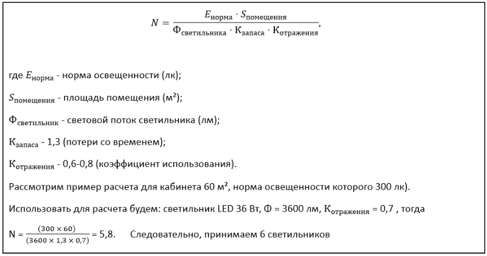
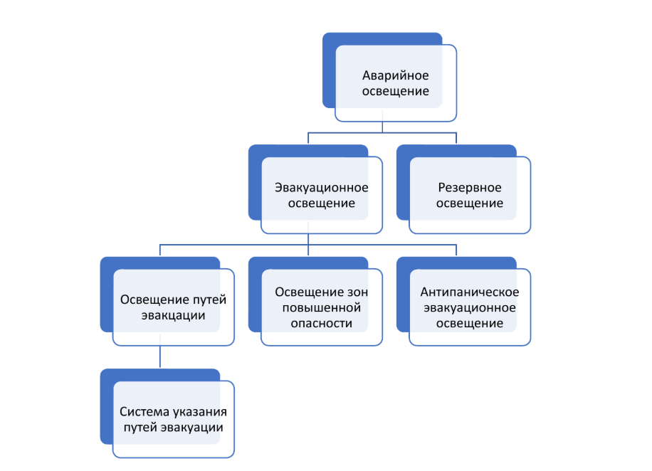
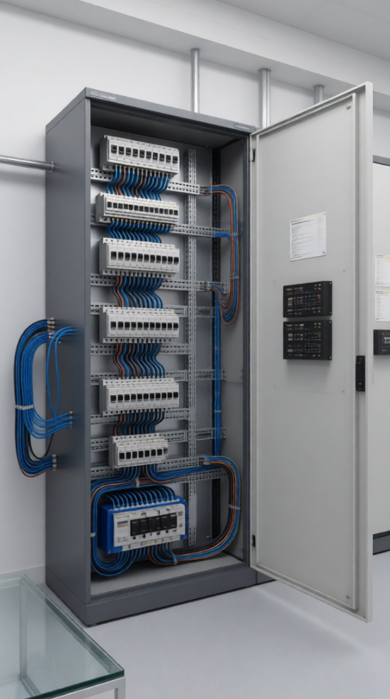

Аварийное освещение и щитовое оборудование

Три критически важные подсистемы ЭОМ
Освещение, щитовое оборудование и аварийное освещение составляют видимую и жизненно важную часть внутренних электрических сетей. Ошибки в их проектировании приводят к трем негативным сценариям:
- отказу экспертизы
- эксплуатационным проблемам
- рискам безопасности
Давайте рассмотрим подробнее, в какой последовательности рассчитывать освещенность.
Шаги расчета освещенности:
- Определить тип помещения, категорию зрительной работы и нормируемую освещенность (Енорма)
- Определить тип светильника (например, LED, потолочный, 4000 К, 3500 лм).
- Воспользоваться программой Dialux или формулой упрощенного метода коэффициента использования.
- Проверить равномерность освещения (не должно быть «пятен»).
На сегодняшний день распространены расчеты через Dialux, их прикладывают для экспертизы.
Выбор систем управления: экономим энергию
Датчики движения. Идеальны для проходных зон (коридоры, лестницы, санузлы).
Выбирайте датчики с настраиваемой задержкой отключения (от 10 сек до 30 мин) и регулировкой чувствительности, чтобы свет не выключался, если человек просто сидит неподвижно за компьютером.
Диммирование. Диммер – это светорегулятор, устройство для уменьшения или увеличения интенсивности свечения источника света относительно базового уровня. Он создан не только для комфорта, но и для экономии. Применяйте в актовых залах, конференц-залах. Приборы с диммерами требуют специальных диммируемых LED-драйверов и соответствующей разводки. Укажите это в спецификации.
Ручное управление. Обязательно для основных рабочих зон (кабинеты, классы). Человек должен иметь прямой контроль над светом.
Используйте проходные и перекрестные выключатели для управления из 2-х и более мест (длинные коридоры, большие залы)
Проектирование систем освещения
Освещение делится на рабочее и аварийное. СП 52.13330.2016 устанавливает обязательные нормы освещенности по типам помещений. Они зависят от вида деятельности и возраста пользователей.
Расчет количества светильников можно провести по следующей формуле:

Случай из практики: при проектировании школ в регионах Сибири мы столкнулись с тем, что в зимнее время из-за короткого светового дня нормативная освещенность снижается до 70-80% от нормы. Поэтому мы всегда добавляем 20% запаса по мощности для учебных классов в регионах с коротким световым днем.
Аварийное освещение
Аварийное освещение активируется при отключении основного питания и обеспечивает безопасную эвакуацию. ГОСТ Р 55842 -2013 «Освещение аварийное. Классификация и нормы» и СП 52.13330.2016, п. 7.6 устанавливают обязательность установки.

1. Эвакуационное освещение:
- Норма: 1 лк на путях эвакуации шириной до 2 метров
- Время работы: 1 час
- Применение: коридоры, лестницы, выходы
2. Резервное освещение:
- Норма: 30% от нормы рабочего
- Время работы: постоянная работа до восстановления питания рабочего освещения
- Применение: операционные, диспетчерские
Резервное освещение следует предусматривать, если по условиям технологического процесса или ситуации требуется нормальное продолжение работы при нарушении питания рабочего освещения, а также если связанное с этим нарушение обслуживания оборудования и механизмов может вызвать:
- гибель, травмирование или отравление людей;
- взрыв, пожар, длительное нарушение технологического процесса;
- утечку токсических и радиоактивных веществ в окружающую среду;
- нарушение работы таких объектов, как электрические станции, узлы радио- и телевизионных передач и связи, диспетчерские пункты, насосные установки водоснабжения, канализации и теплофикации, установки вентиляции и кондиционирования воздуха для производственных помещений, в которых недопустимо прекращение работ, и т.п.
Антипаническое освещение направлено на предотвращение паники и обеспечение условий для безопасного подхода к путям эвакуации и его следует предусматривать в больших помещениях площадью более 60 м2 при одновременном нахождении в нем 30 и более человек, а также в помещениях с постоянным пребыванием маломобильных групп населения и детей дошкольного возраста.
Щитовое оборудование и вводно-распределительные устройства (ВРУ)
В этом многие путаются. Давайте четко разграничим два ключевых понятия.
ВРУ – это точка, где внешняя электрическая сеть заканчивается и начинается внутренняя. Это первый и главный щит в здании. Его основная задача принять, учесть и распределить входящую электроэнергию по всему объекту. (ГОСТ 32396)

Функции ВРУ
- Ввод питания. Прием кабеля от внешней сети.
- Учет электроэнергии. Установка главных счетчиков (коммерческий учет).
- Распределение. Разделение входящего потока мощности на основные группы (линии на этажные щиты, силовое оборудование).
- Защита. Установка вводных автоматических выключателей или рубильников, главного УЗО (противопожарного, 100-300 мА), устройств защиты от перенапряжений (УЗИП).
- Коммутация. Возможность безопасного отключения всего здания от сети для ремонтов.
Щит управления – это специализированный щит для управления конкретным технологическим процессом или оборудованием. Его задача не столько распределять энергию, сколько контролировать, автоматизировать и защищать подключенные исполнительные механизмы (ГОСТ 32395).
Рассмотрим функции щита управления:
- Автоматизация. Запуск/остановка по заданному алгоритму.
- Контроль. Отображение параметров работы (ток, давление, температура, режим) на средствах индикации (сигнальные лампы, дисплеи).
- Логика. Программируемые контроллеры (ПЛК), реле времени, датчики.
- Локальная защита. Защита конкретной цепи от перегрузок.
Щитовая инфраструктура обеспечивает селективную защиту линий освещения, такие как автоматические выключатели, защиты от перегрузок и т.д.
В завершение урока, давайте сформулируем три главных принципа профессионального проектировщика ЭОМ:
- Безопасность превыше всего. Каждое решение должно проходить проверку на соответствие нормам пожарной и электробезопасности.
- Надежность важнее экономии. Лучше заплатить немного больше за качественное оборудование сегодня, чем столкнуться с авариями завтра
- Всегда проверяйте. Никогда не предполагайте – даже если вы уверены в правильности решения, всегда сверяйтесь с нормативными документами.
Практическая часть
Вам необходимо определить необходимое количество светильников для учебного класса площадью 45 м². Для вашего удобства, в интерактиве указали формулу для расчета.